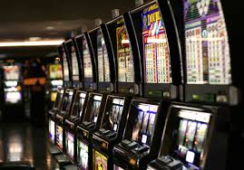
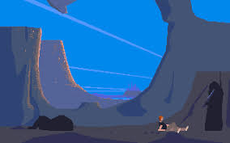
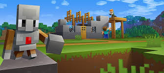

보통 양산형 게임들은 욕을 먹는다. 단순하고 자극적인 형태의 컨텐츠 만을 반복적으로 보여주며, 어떻게든 금전적인 지출을 하도록 플레이어를 유도하려는 얄팍한 속셈이 양산형 게임 속에 너무나 뻔히 자리잡고 있기 때문이다. 그럼에도 불구하고 이런 지나치게 상업적인 디자인이 성행하는 이유는 바로 플레이어들이 이를 알고 있음에도 불구하고 할 수 없이 특유의 중독성의 늪에서 헤어 나오지 못하기 때문이리라.
(이미지 출처: Wikipedia: https://en.wikipedia.org/wiki/Slot_machine)
다만 양산형 게임의 흥행은 오래 가지 못한다. 당장에 유저의 말초신경을 자극하며 과금을 유도하는 방식으로 돈을 벌 수 있을지는 모르지만, 이런 게임은 나중에 세월이 흘러서 명작으로 기억되기 힘들다. 왜냐하면 소비자의 지갑 털기에 급급한 게임이 오랜 시간을 걸친 전략적 분석, 커스터마이징, 그리고 다양한 공략법들을 육성할 만큼 섬세한 디자인적 철학을 가지고 있을 가능성은 거의 없기 때문이다.
마치 고전문학처럼, 긴 시간이 흘러도 수많은 팬들에게 사랑받는 명작 게임들이 있다. 그렇다면 이런 게임들은 도대체 무슨 방식으로 양산형 게임들과는 사뭇 다른 면모를 보여주는 것일까?
(이미지 출처: Abandonia: http://www.abandonia.com/en/games/30/Another+World.html
여기엔 수많은 원인들이 있겠지만, 그 중 가장 대표적인 것을 말하자면 "유저에 대한 존중"을 예로 들 수 있다. 유저는 게임을 하면서 자신이 존중 받는다는 확신을 느낄 때 비로소 게임을 향한 본인의 진심어린 애착과 사랑을 표한다. 게임이 유저에게 표할 수 있는 존중의 종류에는 다음과 같은 것들이 있다.
(1) 자유에 대한 존중
GTA나 '레드 데드 리뎀션'(Red Dead Redemption)과 같은 오픈월드 게임들, 또는 각종 샌드박스 게임들은 수많은 사람들에게 명작으로 인정받는다. 그 이유는 바로 이 게임들이 플레이어의 자유를 존중하기 때문이다. 게임 속에서 자신이 하고 싶은 것을 하고, 자신이 원하는 결정을 내리고, 또는 자신이 표현하고 싶은 것을 마음껏 표현 할 수 있도록 해 주는 행위에는 단순한 숫자적 개념의 자유도를 넘어선 숭고한 의미가 있다.
(이미지 출처: Game Gavel: https://gamegavel.com/best-sandbox-games/)
보통 사회인으로서 살아가는 개인은 학교나 직장에서 가해지는 온갖 제약과 규범에 억눌려 본인의 역량을 철저히 무시당하곤 한다. 극소수의 엘리트를 제외한 나머지 구성원들에게 사회가 소리치는 암묵적 명령은 바로 "너는 시스템을 유지하기 위해 소모되는 한낱 도구일 뿐이다. 너만의 의견 따위는 가지지 말고 살아라" 이다. 이는 지구촌 그 어디에서도 통용되는 이야기라고 할 수 있다. 흔히 말하는 전체주의 체제와 개인주의 체제의 차이점은 그저 개인의 역량을 직접적으로 대놓고 무시 하는지, 아니면 간접적으로 교묘하게 무시 하는지의 차이에 불과할 뿐.
(다음 글에서 계속...)